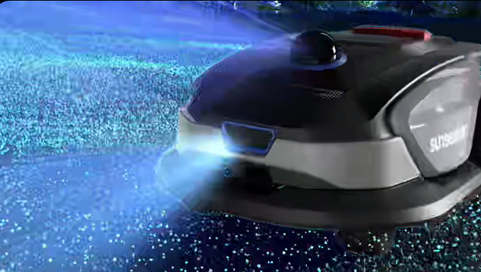
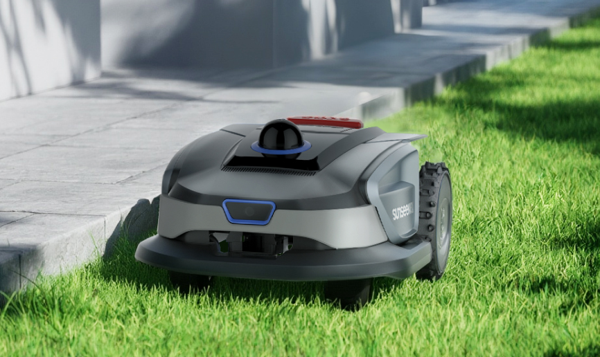

Executive Summary
Buy the Sunseeker S4 if you want a wire-free robot mower for a small-to-medium yard, hate the idea of burying boundary wire, and are comfortable doing occasional trimming and app-guided setup. Skip it if your lawn has complicated gates, standing-water risk, heavy edge-detail expectations, or if you need a larger long-term owner base before spending close to four figures.
The pitch is simple: robot-vacuum convenience, but for the lawn.
The S4 is interesting because it tries to solve the part of robot mowing that scares normal buyers: installation. Instead of wires, antennas, and weekend projects, the S4 leans on 360-degree LiDAR, AI vision, app mapping, and obstacle avoidance. That makes it easier to understand than many premium mower bots, but the buying decision still depends on your yard shape, grass edges, weather exposure, and patience for first-week tuning.
BEST FOR
The best buyer is someone with a quarter-acre-ish lawn, basic Wi-Fi/app comfort, and a real desire to stop mowing several times a month. It makes the most sense when the lawn is open enough for mapping, but annoying enough that paying for automation feels reasonable.
- + Homeowners who want wire-free setup instead of buried perimeter cable
- + Small-to-medium yards where frequent maintenance mowing matters more than edge perfection
- + Busy yards where obstacle avoidance is more than a nice-to-have
- + Buyers comparing robot mowers before jumping to $2,000-plus flagship models
Skip If
The S4 is not magic grass equipment. It is a small autonomous mower that works best when your yard is friendly enough for a robot and you are realistic about what still needs human help.
- You expect clean hardscape edges without using a string trimmer afterward.
- Your front and back yards are separated by a closed gate you do not want to manage.
- Your lawn has standing-water problems or low spots that collect storm runoff.
- You need half-acre or multi-acre coverage from one mower.
- You want years of owner durability data before trusting a connected outdoor robot.
Price Reality Check
The Sunseeker S4 sits in the premium-but-not-absurd robot mower tier. Launch and early review coverage put it around the $1,299 to $1,799 range, with at least one July 2026 review noting an Amazon sale price below $1,000.
At this price, it needs to replace a chore, not just impress you with sensors.
The value case gets much stronger if you normally pay for mowing, have allergies, lose weekend time to yard work, or would otherwise buy a more expensive wire-free mower. It gets weaker if your yard is tiny, oddly divided, mostly shaded and slow-growing, or if a basic cordless mower already feels easy enough.
Deep Dive
LiDAR Mapping Without Boundary Wires
The main benefit is not that the S4 has LiDAR. The benefit is that the mower can create a usable lawn map without asking you to bury wire or install a separate GPS-style base station.
The buyer question: is your yard robot-simple, or robot-annoying?

- Automatic mapping is the feature that separates this from older wire-dependent robot mowers.
- Manual correction may still be needed in corners, angled sections, and awkward lawn shapes.
- Multiple zones are useful, but physical gates can still break the hands-off dream.
- The 3D map matters because it gives buyers a way to see what the mower thinks the lawn looks like.
Buyer takeaway: This is a good fit if your lawn can be mapped cleanly. If your yard is a maze, compare more powerful AWD or RTK models before buying.
Obstacle Avoidance
The S4 is designed to route around ordinary backyard clutter. That matters because a robot mower is only useful if you do not have to babysit every pass.
- Obstacle avoidance should matter most in yards where hoses, furniture, balls, and small objects move around.
- Vision support is a risk-control feature, not just a tech spec.
- Buyers should still do a quick lawn sweep before mowing if tools, cords, or small debris are common.
Buyer takeaway: The S4 looks strongest for normal messy backyards, not pristine demo lawns. That is exactly where most robot mowers need to prove themselves.
Cutting Width, Edges, and Lawn Expectations
The smaller cutting deck helps keep the mower compact, but it also shapes what buyers should expect. This is a maintenance mower, not a one-pass yard renovation machine.
- The 7-inch cutting width means large lawns will take time.
- Frequent scheduled mowing should matter more than raw cutting speed.
- Edges remain the weak spot, so keep a trimmer in the plan.
Buyer takeaway: If your dream is never touching lawn tools again, this may disappoint. If your dream is mowing far less often, it makes more sense.
Real-World Ownership Check
Robot mowers live outside, which makes ownership more complicated than robot vacuums. The S4 reduces installation pain, but you still need a dock location, outdoor power, app setup, blade maintenance, seasonal storage, and a plan for weather.

- Setup: Expect dock placement, app pairing, charging, mapping, zone creation, and a few tuning runs.
- Maintenance: Blades, cutting disc cleaning, camera cleaning, and LiDAR dome cleaning still matter.
- Fit: The dock needs a practical outdoor outlet and enough clearance that it does not become yard clutter.
- Noise: It should be much less intrusive than a gas mower, but repeated passes still need schedule planning.
- Deal breaker: Standing water and poor drainage can turn an outdoor robot from convenient to risky.
What I Would Compare Next
The right comparison is not just another mower. It is the whole lawn-care workflow you are trying to escape.
- Ecovacs Goat O1000 / A2500 RTK: Compare if Amazon price and owner-review volume matter more than LiDAR-first simplicity.
- Mammotion LUBA 3 AWD: Compare if your yard has serious slopes, rough terrain, or a larger coverage requirement.
- Segway Navimow models: Compare if you want a more established wire-free robot mower ecosystem.
- Roborock RockMow X1 LiDAR: Compare if you like robot-vacuum brands entering lawn care and want to wait for more direct coverage.
- A cordless mower plus trimmer: Compare if your yard is small enough that automation may be overkill.
Buyer Signal Analysis
The Sunseeker S4 deserves a closer buyer look because robot lawn mowers are crossing from hobbyist gadget territory into normal homeowner consideration. The confusing part is that buyers are not only comparing brands. They are comparing installation methods, yard shapes, mapping systems, weather risk, edge trimming, and whether a robot can replace the emotional relief of simply being done with mowing.
Buyer Confidence by Evidence Type
Assimilated Signal Sources
- ManufacturerSunseeker positions the S4 around 360-degree LiDAR, vision support, wire-free mapping, small-yard coverage, obstacle detection, and easier setup.
- Professional reviewsFresh hands-on coverage praises setup, mapping, app control, and regular cut quality while still flagging edge trimming and weather caution.
- YouTube demosVideo evidence is useful for dock size, app mapping, obstacle avoidance, cutting patterns, and how slowly the robot handles real lawn passes.
- Amazon ownersLive buyer feedback should be checked for delivery damage, app friction, drainage issues, blade replacement, map reliability, and warranty response.
- Reddit chatterThe likely debate is whether robot mowers are finally easy enough, or whether owners still spend too much time managing edges, zones, and docks.
Unanswered Buyer Questions
QuietTrends read: The S4 is one of the more understandable robot mower choices because the benefit is concrete: easier setup and less mowing. The smart move is to buy only if your yard fits the robot, not because the sensor story sounds futuristic.
OUR VERDICT
Buy for the Right Yard
Sunseeker S4 Robot Lawn Mower
The Sunseeker S4 is a promising wire-free robot mower for buyers who want frequent maintenance cuts without boundary-wire installation, but its value depends heavily on lawn layout, drainage, edge expectations, and how much first-week tuning you are willing to do.
Final Buyer Guidance: Buy it if you have a manageable small-to-medium yard and want to reduce mowing work dramatically. Compare first if you have slopes, multiple separated zones, serious edge-detail expectations, or want more long-term owner data. Skip it if a simple cordless mower already feels easy.